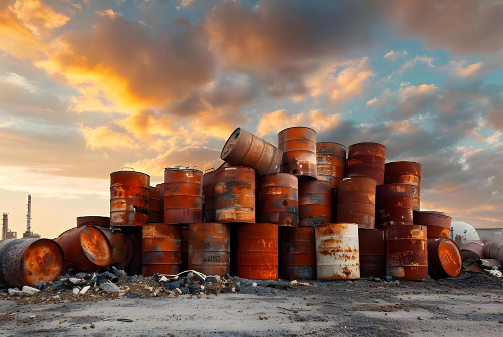

Spent Oil Management & Recycling Services in Tamil Nadu
Authorized collection, chemical assessment, sustainable recycling, and certified disposal for spent metalworking oils, quench fluids, and process lubricants across Tamil Nadu.

What is Spent Oil Management?
Spent oil refers to industrial petroleum or synthetic process oils that have completely exhausted their functional chemical additives and lubricating properties through severe manufacturing, machining, or thermal processing cycles.
Unlike lightly degraded oils, spent oils—such as heat-treatment quench oils, cutting fluids, and stamping lubricants—often carry heavy thermal carbonization, metal micro-swarf, and chemical degradation byproducts. Categorized under Schedule I, Category 5.1 of India's Hazardous Waste Management Rules, spent oils require specialized handling. Green Way Industries provides authorized profiling, on-site containment, recycling, and statutory Form-10 manifests to keep your plant fully compliant.
Why Spent Process Oils Require Dedicated Handling
Exhausted process lubricants pose unique disposal challenges due to heavy carbonization, polymer breakdown, and volatile flash point shifts.
Flash Point & Fire Hazard Controls
Spent quench and heat-treatment oils often experience lowered flash points, creating combustible storage hazards that must be evacuated safely.
Chemical Compatibility Verification
We test for chlorinated compounds, heavy metals, and emulsifiers to ensure safe handling and compliant downstream recycling.
Statutory Form-10 Handover
Fulfill mandatory Hazardous Waste Rules 2016 requirements with signed Form-10 manifests verifying authorized transfer from your plant.
Our Spent Oil Management Process
From metallurgical tank pump-outs to final recycling verification, we deliver a disciplined management pathway.

Origin & Process Characterization
You provide details regarding process origin (quenching, stamping, cutting, or rolling) and estimated generation volume.
Compatibility & Safety Profiling
We confirm that spent streams are non-explosive and verify compatibility with authorized recycling and handling parameters.
Authorized Vacuum Evacuation
We deploy dedicated tankers or heavy-duty drum transport vehicles to safely evacuate spent fluids from your facility.
Distillation & Resource Recovery
At our SIDCO Tindivanam facility, spent oil is stripped of heavy carbon, dewatered, and re-refined into industrial fuel or base oil cuts.
Form-10 Manifest & Closeout
Clients receive signed regulatory manifests documenting the lawful transfer and processing of the hazardous waste stream.
Spent Oil Types Handled
We manage diverse spent petroleum and synthetic process formulations:
- Spent heat-treatment and metallurgical quenching oils
- Exhausted neat cutting oils and metal-removal lubricants
- Spent drawing, cold-heading, and stamping process oils
- Degraded heat-transfer fluids (thermopac oils) and thermal oils
- Industrial machinery sump cleanout residues and spent lubricating fluids
Industries Serviced Across Tamil Nadu
Delivering compliant spent oil management to specialized engineering sectors:
- Automotive component forging, stamping, and heat-treatment plants
- Precision CNC machining, tooling, and fastener manufacturing hubs
- Steel tube mills, wire-drawing units, and metal fabrication centers
- Boiler, furnace, and thermal power heating equipment operators
- Heavy industrial maintenance and plant engineering facilities
Our Infrastructure & Logistics Capabilities


Spent Oil Services Across Tamil Nadu
Green Way Industries supports manufacturing and metalworking hubs throughout Tamil Nadu with reliable spent oil solutions.
Operating from our corporate office in Ashok Nagar, Chennai, and our authorized processing facility in SIDCO Industrial Estate, Tindivanam/Villupuram, our logistics fleet provides scheduled collection across Ambattur, Sriperumbudur, Oragadam, Maraimalai Nagar, Ranipet, Tiruvallur, Salem, Erode, and Coimbatore.
We coordinate collection around maintenance shutdowns and tank changeout cycles to minimize downtime for plant production managers.
Arrange Spent Oil Disposal
Contact our chemical and logistics team to review your spent process oils and establish a compliant disposal schedule.
Corporate Office: Ashok Nagar, Chennai
Refining Facility: SIDCO Industrial Estate, Tindivanam
Phone: +91 93600 36055
Email: admin@usedoil.in
Why Choose Green Way Industries for Spent Oil?
TNPCB Authorized
Licensed operations ensuring spent oil is handled strictly within state environmental guidelines.
Form-10 Manifests
Authentic regulatory manifests issued immediately upon vehicle departure from your factory.
Vacuum Fleet Capacity
High-suction tankers capable of draining heavy quench tanks and deep machinery pits.
Maximum Resource Value
Advanced vacuum distillation reclaiming high-value hydrocarbons for circular industrial use.
Spent Oil Management FAQs
In industry parlance, spent oil typically refers to process oils (cutting fluids, quench oils, thermal fluids) that have undergone severe chemical or thermal depletion during manufacturing, whereas used oil often denotes drained motor or lubricating lubricants.
Yes. If quench oils are free from heavy solvent or halogen contamination, they can be thermally re-refined into base oils or converted into industrial fuel oil alternatives.
Store spent oil in dedicated, labelled 200-litre drums or bunded tanks. Avoid mixing neat spent oils with water-soluble coolant emulsions or chemical cleaning solvents.
Yes. After tanks have cooled to safe ambient temperatures, our vacuum suction tankers can evacuate fluids directly via heavy-duty hoses.
Spent oil is categorized under Schedule I, Category 5.1 ("Used or spent oil") of the Hazardous and Other Wastes Rules, requiring mandatory Form-10 manifests.
Yes, we evaluate and collect drained synthetic and mineral thermic heating fluids during boiler maintenance and heat exchanger overhauls.
Safely Evacuate & Manage Your Spent Process Oils
Send us your spent oil specifications and volume to receive technical evaluation, prompt pickup scheduling, and statutory Form-10 manifests.
Request Spent Oil Quote Speak to Our Technical Team